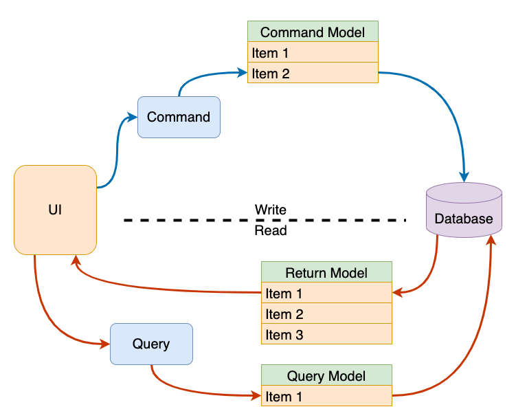
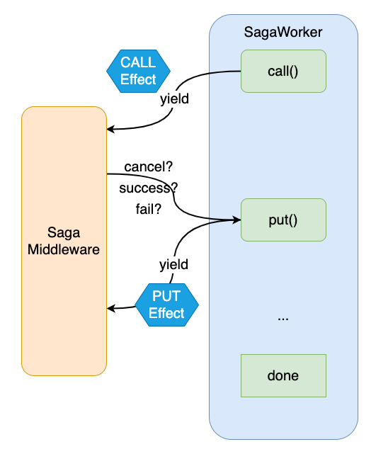
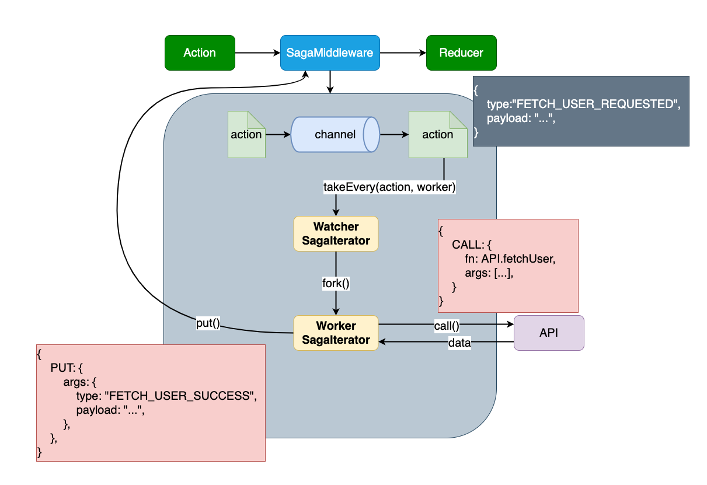

Redux Tutorial
Sean Chang
NTAD
Why we need Redux?
State management sucks!

Lifting state up
props, props and props...
States are trackable!
Redux time travel
Side effects
Use effects in UI component directly
Container/Presentational Pattern
React Rookie
- Container: cope with data manipulation & logics
- Component: focus on UI styles.
Start from a simple App
Container
Component
Advantages
- Splitting UI & logics code (maintainability)
- Lifting states up
- Make UI components more reusable
CDD (Component driven development)

But!
State management still sucks!
Redux to the rescue!
Redux
- State management
- Inspired by Flux (One-way data flow)
- Inspired by elm (Reducers)
- Command Query Responsibility Segregation (CQRS)
- Event Sourcing
Flux vs MVC
F8 2014 (Facebook)
The elm architecture
MVU: Model-View-Update
CQRS
Event sourcing
3 Principles
- Single source of truth (SSOT)
- State is read-only (Immutable)
- Changes are made with pure functions (Reducers)
Terminology
- Store: store states, dispatch actions
- Reducer: (State, Action) -> State'
- Action: javascript object contains type key.
- Dispatch: only way to change states
- Selector: (State) -> Data
- Action Creator: (Payload) -> Action
Understanding Redux from types
One-way data flow

Hands-on Redux
Installation
Store
./src/store.js
App
./src/index.js
Slice
./src/features.js
Invisible hand
What Redux Toolkit done for us
Selector
./src/selector.js
Container
./src/container/Dashboard.js
Simple App + Redux
The Problems been solved
- ✅ No longer to lift state up
- ✅ Finally, We have a state management mechanism
- ✅ States are trackable
- ✅ Eliminate side effect in UI
Redux Style Guide
https://redux.js.org/style-guide/style-guide#priority-a-rules-essentialPriority A: Essential
- Do Not Mutate State (link)
- Reducers Must Not Have Side Effects
- Do Not Put Non-Serializable Values in State or Actions
- Only One Redux Store Per App
So... How can we eliminate the side effects in Redux reducers?
Redux Middleware can do this!
One-way Data Flow with Middleware

Middleware to the rescue!
What is a middleware?
Let's start from a simple log function...
Version 1
Log before & after dispatching an action
Version 2
DRY: don't repeat yourself
Version 3
Monkeypatch: I'm too lazy to import this function every time!
Version 4
We can have many patches
Version 5
Hide mokeypatch
We need to go deeper!
Version 6
Remove monkeypatch: pass the next for me plz!
Redux applyMiddleware API
Version 7
Currying!
Congrats!
You are able to write a redux middleware!
Apply middlewares to redux store
./src/store.js
Data Flow become more complicated!
Redux-Saga

Redux-Thunk
Side Effects Management
Redux-Thunk
What is a thunk?
"thunks" are a pattern of writing functions with logic inside that can interact with a Redux store's dispatch and getState methods.
Thunk function
Can be synchronize or asynchronize function
Recall the ActionCreator & Dispatch
Rewrite action creator
How do we call the API?
How Does the Thunk Middleware Work?
Thunk Flow
Redux-Saga
ES6 Generator
Saga
Generator function yields Effects
Declarative Effects
Yield an object and let middleware execute
Two Types of Sagas
- Watcher: generator yield
take, takeEvery, .... Register saga worker and listen on specific action type. - Worker: generator yield
call, put, ....Run jobs defined in worker function.
A common saga worker
A common saga worker (cont'd)
Sagas
./src/saga.js
./src/store.js
Dispatch an action!
How does SagaMiddleware Works?
Testing
Prerequisites
Slice
Sagas
Testing Reducers
Testing Sagas